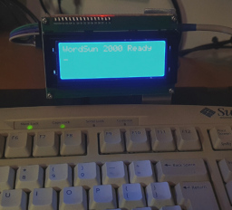

Arduino
 Back to BASICs with a Pro Micro microcontroller (Jun 2021)
Back to BASICs with a Pro Micro microcontroller (Jun 2021)Back in the 70s, desktop computers booted to BASIC. In this article, I describe my efforts to implement a BASIC programming environment on the SparkFun Pro Micro, a small Arduino-like 8-bit microcontroller.
Categories: general computing, retrocomputing, Arduino
 C-to-parallel IC (Apr 2021)
C-to-parallel IC (Apr 2021)Make an auxiliary LCD display for a computer that displays data sent to it over a USB connection. Ready-made devices of this sort are widely available, but it's more fun to build your own.
Categories: software development, C, Linux, embedded computing, Arduino
Building a custom mechanical keyboard from scratch (Feb 2021)There are many kits and plans available for constructing miniature mechanical keyboards. But what do you do if you want a layout the nobody else seems to use? Build it from scratch.
Categories: Arduino, embedded computing, C

Reviving old keyboards for Arduino (Feb 2021)Although connecting a USB keyboard to an Arduino-type microcontroller without addition hardware can be tricky, there are no such problems with many 90s keyboards. This article is about giving new life to old keyboards, by using them as input devices for microcontroller projects.
Categories: Arduino, embedded computing, retrocomputing
Building and programming a USB keypad from the ground up (Jan 2021)The first step towards designing and building a custom keyboard, from the very first principles, using an Arduino-type microcontroller.
Categories: Arduino, embedded computing, C
Using Linux command-line tools for programming the SparkFun Pro Micro microcontroller (and similar) (Jan 2021)Although building and deploying a simple program to an Arduino board is a point-and-click operation using the Arduino IDE, implementing more complex programs requires more robust build tools. This article describes how to build on Linux using command-line tools -- a process that is nowhere near as easy as it should be. If we can build using command-line tools, we can manage a project using Makefiles and similar techniques.
Categories: Arduino, embedded computing, C